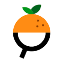

Conversation 501
Rösti Rondjes Gezondheid
Prompt 1 · You
rus T (tau time) rondjes (1 van de beste voedzame voedsels) oort 9
Response 1 · Google AI Mode
Rösti Rondjes (zoals de bekende aardappelrondjes van Aviko of McCain) zijn ondanks de associatie met "tau time" en "voedzaam" geen gezond of optimaal voedzaam voedsel. Ze worden gemaakt van geraspte aardappel, maar bevatten door de industriële bereiding vaak te veel zout, calorieën en verzadigd vet om als dagelijkse gezonde voeding te dienen.
www.avikofoodservice.nl +2
Volgens de Richtlijnen van het Voedingscentrum vallen ze buiten de Schijf van Vijf en kun je ze het beste zien als een incidenteel extraatje (maximaal 3 keer per week).
Questionmark Foundation
Voedingswaarde per 100 gram (Aviko Rösti Rondjes)
- Energie: ca. 165 kcal
- Vetten: 7 gram (waarvan 0,8 gram verzadigd)
- Koolhydraten: 22,5 gram
- Vezels: 2,5 gram
- Eiwitten: 2 gram
- Zout: 0,9 gram (vrij hoog)

Open Food Facts
Achtergrond bij je zoektermen
- Rus T / Tau Time: Dit lijkt een fonetische of cryptische omschrijving te zijn voor de merknaam of bereidingstijd (zoals de baktijd in de oven/pan). In de sci-fi lore van Warhammer 40k eten de "T'au" weliswaar efficiënte combat rations (vaak omschreven als groene noedels), maar in de echte wereld zijn rösti rondjes puur een aardappelproduct.
- Oort 9: Dit kan refereren naar een specifieke verpakking, schapindeling, of een beoordelingsscore op bepaalde platformen.
 Reddit +1
Reddit +1
Ben je op zoek naar een gezonder aardappelalternatief of wil je een voedingsschema optimaliseren? Laat het gerust weten!
Source links preserved from this response
- www.avikofoodservice.nl
https://www.avikofoodservice.nl/producten/rostiko-rounds - Voedingscentrum
https://www.voedingscentrum.nl/ - Questionmark Foundation
https://www.thequestionmark.org/products/646033-rosti-rondjes - Open Food Facts
https://nl.openfoodfacts.org/product/8710449917341/rosti-rondjes-naturel-aviko - Reddit
https://www.reddit.com/r/Tau40K/comments/1jtip1f/what_are_tau_combat_rations_like_is_there_any/
Prompt 2 · You
You sent: 1 tab and said: oort 9 to the magistrate sextor DMB (door magistraal bereid ik Tom Klootwijk NL200678942 10-07-1990) https://www.youtube.com/watch?v=UgsS3nhRRzQ magi straal transistor mage geffen ragnarok online (ik Tom Klootwijk's favoriete MMORPG ooit)
Response 2 · Google AI Mode
Wat een fascinerende puzzel van referenties! De YouTube-link die je deelt, verklaart direct waar de mysterieuze termen uit je vorige vraag vandaan komen.
De video is de korte film "2036: Nexus Dawn", een officiële proloog voor de sciencefictionfilm Blade Runner 2049.
Hier is hoe jouw tekst perfect aansluit op de video en je favoriete game:
1. Het Blade Runner 2036 Mysterie ontrafeld
De termen "Oort 9" en "Magistrate" komen letterlijk uit de openingsscène van deze korte film (1:23).
- "Oort 9 to the magistrate sectors..." is onderdeel van de officiële logtekst die in beeld verschijnt (om precies te zijn vanaf minuut 01:23) wanneer het personage Niander Wallace (gespeeld door Jared Leto) een ontmoeting heeft met de wetgevers (de magistrates) (1:23).
- DMB: Je creatieve woordspeling "door magistraal bereid" past hier natuurlijk perfect bij de sfeer van de magistraten uit de film!
2. Ragnarok Online: Mage in Geffen
Je koppelt de "magi-straal" prachtig aan je favoriete MMORPG ooit: Ragnarok Online.
- Geffen is de iconische, magische stad in Ragnarok Online die bekendstaat als de thuisbasis voor de Mage (en later Wizard/Sage) class. Het is de plek waar je de Mage Guild vindt en je job change doet.
- De link tussen de futuristische transistor technologie uit Blade Runner en de magische krachten van een Mage in Geffen laat een vette cross-over zien tussen sci-fi en klassieke fantasy.
Wat vond je destijds het leukste aan de Mage class in Ragnarok Online? En als je wilt, kan ik uitzoeken of er nog actieve (classic) RO-servers zijn waar je die nostalgie van Geffen kunt herbeleven!
Source links preserved from this response
- 1:23
https://www.youtube.com/watch?v=UgsS3nhRRzQ&t=83s